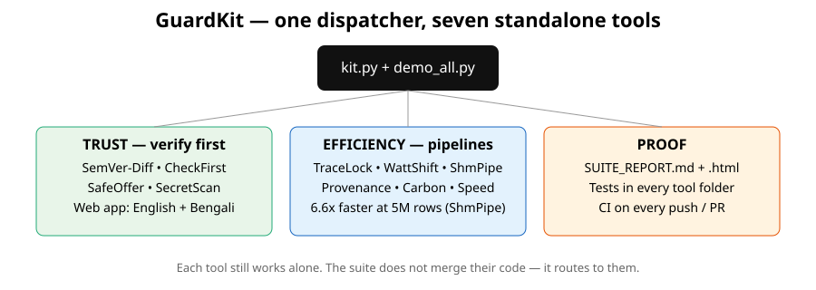

🛡️ GuardKit
Verify before you trust. Make pipelines faster, greener, reproducible.
Seven working tools in one worldwide suite. English primary, with Bengali support for the trust checkers. Each tool works alone. One command proves them all.
🌍 Worldwide • 7 tools • Demo: ALL PASS • No upload • No install for the web app🔍 SemVer-Diff
Catches silent breaking changes in a "safe" patch. Demo: 4 divergences found.
Click to try: python kit.py semver-diff compare …
✅ CheckFirst
Paste a forwarded message, get a scam / misinformation check. Demo: scam 100/100 RED.
Click to try: Open web app →
💰 SafeOffer
Paste a job / loan offer before you pay. Demo: fake job 100/100 RED.
Click to try: Open web app →
🔐 SecretScan
Scan for hardcoded secrets before you push. Demo: leaky 3 findings, clean 0.
Click to try: python kit.py secretscan scan …
🧬 TraceLock
Provenance for pipelines, with corruption alerts. Demo: 50% empty cells flagged.
🌱 WattShift
Cleanest time to run a batch job. Demo: saved 350g CO2 (60.3%).
⚡ ShmPipe
Shared-memory data pipes. Demo: 6.6x faster than CSV at 5M rows.
Proof, not promises — interactive demo results
Run python kit.py demo yourself, or open SUITE_REPORT.html in the repo. Every result below was actually run:
- SemVer-Diff: PASS — 4 divergences
- TraceLock: PASS — no alerts on good pipeline
- WattShift: PASS — 350g saved
- ShmPipe: PASS — round-trip OK
- SafeOffer: PASS — 100/100 RED
- CheckFirst: PASS — 100/100 RED
- SecretScan: PASS — leaky flagged, clean passed

Privacy: the web app checks in your browser only. Nothing is uploaded. Never paste OTP, passwords, passport, or bank details. GuardKit is not legal or medical advice.